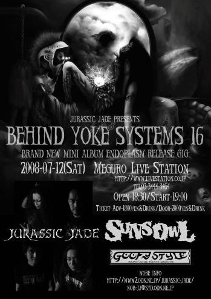
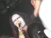
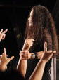

●７月12日（土）目黒LIVE STATION
BEHIND YOKE SYSTEMS 16
BRAND NEW MINI ALBUM
「ENDOPLASM」RELEASE GIG
With:SUNS OWL
GOOFY STYLE

●ＪＵＲＡＳＳＩＣ ＪＡＤＥ’Ｓ setlists
1. ドク・ユメ・スペルマ
2. 触れてはいけない
3. Monster Sacre, Faradized
4. Smell Of The Pebble
5. 3times Per 49days
6. 我が名はHizumi
7. 9月の詩
8. Endoplasm
9. Mimic Cry
10.Let's Go Heroes
11.The Individual D-Day～精神病質（Seishin-Byo-Shitsu）～Go To The Dogs
12.鏡よ鏡
13.Hemiplegia
-Encore-
1. Bassmanは死なず
●ＭＥＭＢＥＲ’Ｓ comment
ＨＩＺＵＭＩ
ＮＯＢ
GEORGE
ＨＡＹＡ
●ＡＬＢＵＭ
| (C)小川聖人氏撮影 |
 |
| （C）フジイコウジ氏撮影 |
 |
| (C)山口聡氏撮影 |
●BBS comment
お疲れさまでした。 投稿者：mibo 投稿日：2008年 7月12日(土)23時58分4秒
今回は、ものすごく早く・・・
目黒、お疲れ様でした。大変有意義な時間を過ごさせて頂きました。
新曲を全部やった感じだったでしょうか？初めてライブで聴く曲でも、
馴染んだ感じに聞こえました。楽しかったです。
偶然、一緒だった連れも、えらく感銘を受け、帰りは熱く語っておりました。
明日は伺えませんが、次回のライブも楽しみにしています。よろしくお願いします。
レコ発。 投稿者：藤井 投稿日：2008年 7月13日(日)01時05分13秒
あ、Miboちゃんが書き込み！早！（笑）
鼠径ヘルニア（つまり脱腸）ということで、5年ぶりぐらいに暴れないで見ました。（笑）
たまには、こういったライヴの見方をするのもいいものと思いました…。
サウンドは、Hayaさんのスネアがとても重く響いて心地よかったですね。
新作はヘヴィーローテーション中ですが、今回の作風にはドラマを感じさせる面があり、
それがライヴだともっと深い表情を持って迫ってきました。
あと、"Mimic Cry"の中間のアルペジオが凄く怖い和音の響きなんですが、
あれもゾクゾク来ました…!!
明日は行けませんが…次は、名古屋で…。（脱腸は大丈夫だと思います…多分。）
http://homepage2.nifty.com/tou_csui/top.htm
目黒 投稿者：あつ 投稿日：2008年 7月13日(日)16時41分4秒
お疲れ様でした
今回は新曲を予習してたので、楽しめました
MCで名前を呼んでいただくのは、光栄というかちょっと恥ずかしいです
また来週も行きますので、よろしくお願いします
お疲れ様でした 投稿者：さる 投稿日：2008年 7月13日(日)23時59分49秒 編集済
目黒＆川崎の二連荘参戦となりました。両日ともに素晴らしいライブで、たくさんの元気を受けることができました。ありがとうございます。
両ライブとも、たっぷりの時間とそれぞれの日で違う構成だったこともあって、大満足です。初ライブ体験となった新作からの後半三曲は非常に印象的。
とくにタイトル曲となる「Endoplasm」は曲の持つ意味合いもあるのですが、それ以上になんというか包み込んでもらっている感じが強くて、とても暖かくなりました。
そして、目黒のアンコールは「ベースマン…」。JJの思いが伝わりました。川崎でも、もう一曲欲しかったのですが…この日はしょうがないですね（苦笑）。
目黒ライブの模様をﾁｮﾋﾟﾘとｱﾌﾟ。次回参戦は久々に遠征することになりそうですので、またよろしくお願いします。
PS：土曜は打ち上げまで。ありがとうございました。
http://home.g03.itscom.net/boana/
目黒レコ発 投稿者：kazzui 投稿日：2008年 7月14日(月)07時09分20秒
JJのメンバーの皆様ならびにJJ CREWさん､お疲れ様でした｡
十数年前にHEAVY METAL FORCE3でJJを知ってから
ずっと観たかったJJのライブを目黒では､初めて体験させて頂き､大変ありがとうございました｡
最高にカッコ良かったです!!すげぇ興奮しました｡
なんか安っぽい言い方しか出来なくてすいません｡(汗
9月の我が地元､足利 BBCまではJJのライブを再び体験出来るかわかりませんが
関東で開催される際は是非､また足を運ばせて頂きます!
お陰様で元気を貰いました｡
…が､十数年振りにヘドバンして､まだ若干､首が痛いですw
濃い二日間を終えて 投稿者：NOB-JURASSIC JADE 投稿日：2008年 7月14日(月)19時17分37秒
JURASSIC JADE「ENDOPLASM」レコ発ライブ～ADDICT XX（アディクト・ダブルエックス）の濃い二日間が終わりました。
見てくださった方々、対バンの方々、スタッフの方々、お疲れ様でした。
私達にとっても、とても充実したそして楽しい二日間でした。
私達のことだけではなく、どちらのイヴェントも素晴らしかったので、もっと沢山の方々に見てもらいたかったし、見られなかった方々は大事な物を見逃したのでは？と思います。
「もったいない」感じです。（笑）
JURASSIC JADEの今週末は名阪２daysです。
●７月19日（土）難波ROCKETS
"GOOD RIDDANCE vol.82"
OPEN: 18:00 START: 18:30
ADV:\1300 AT DOOR:\1600
With: LOVE IS DEAD/DROWNED MIND
FIVE NO RISK/CYBERNE
●７月20日（日）名古屋栄TIGHT ROPE
[JURASSIC JADE "ENDOPLASM"レコ発in 名古屋]
OPEN:18:00 START:18:30
ADV:\1800+1DRINK(￥500)
AT DOOR:\2300+1DRINK(￥500)
With:BOLD FAT MISSILE/RIVERGE
CYBERNE/RIGHTBRAIN
それぞれの地のバンドさんのご好意で呼んでいただいてます。
是非!!お越し下さい。
チケット予約受付中です。
メールお待ちしてます!!
＞mibo 様
その日のうちの書き込みありがとうございます。
楽しんでいただけたようで嬉しいです。
連れの方にもよろしくお伝え下さい。
＞藤井 様
お大事に!!
感想ありがとう。
あのアルペジオは「ねじれた深い悲しみ」みたいなイメージです。
怖いですか？
俺は弾きながら少し泣きます。恥ずかしいですね。
＞あつ 様
またまたの遠征、感謝です。
HIZUMIの迷いを吹き飛ばしてくれたキーワードを、図らずも口にしたあつ君へのお礼の声懸けです。まだまだ続くかもですよ。(笑）
週末お待ちします!!
＞さる 様
目黒・打ち上げ・川崎とメンバーと同じような時間の過ごし方に感謝します。
疲れたでしょう?
「ベースマンは死なず」はさるさんの日記からヒントをいただいてアンコールにしました。
川崎では演奏終了後に
「All the things were taken by force named justice」のコーラスを皆さんが叫んでくれて感動しました。
遠征先でお待ちしてます。
＞kazzui 様
はじめまして。
感想聞かせてくださってありがたいです。
初めて伺う足利。心細いので、是非！応援お願いします。
BACK TO